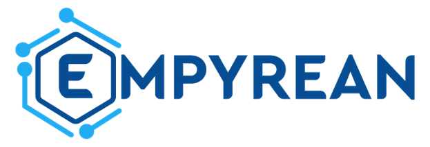

Call for papers
Recent advancements in robotics, including autonomous vehicles e.g. UAVs, alongside edge and cloud computing, have paved the way for developing sophisticated robotic systems that harness these technologies.
The Robotic Systems in the Edge-Cloud Continuum (RISE) workshop brings together leading academics and industry professionals to explore how robotic systems can be designed, implemented, and optimized through the edge-cloud continuum. This workshop also focuses on how hyper-distributed applications’ workloads and data that originate from robots and their sensors, should be processed and stored across devices, multiple edge computing layers, and centralized cloud resources.
The RISE workshop is co-organized by the EMPYREAN project.
Topics of Interest
We invite submissions of original research, work-in-progress, and proof-of-concept studies introducing novel ideas and innovative directions. We welcome submissions addressing the design, development, and evaluation of architectures, technologies, and applications for robots utilizing the edge-edge continuum, including but not limited to:
- Data processing and storage
- Distributed and collaborative robotics
- IoT, edge-cloud and robotics
- AI and machine learning for robotic operations
- Cybersecurity in edge-cloud and robotics
- Edge-cloud networking
- Autonomous system control and automation
- Digital twins for robotics
- Resource orchestration
- Processing of sensor data (e.g., LIDAR) within the continuum
- Use of hardware accelerators (GPU, DPU, FPGA)
- Robotic applications utilizing the continuum
Submission Guidelines
TBA
Workshop Committee
Organizers
- Professor Emmanouel Varvarigos, Institute of Communications and Computers Systems, NTUA, Greece (vmanos@mail.ntua.gr)
- Professor George Nikolakopoulos, Luleå University of Technology, Luleå, Sweden (george.nikolakopoulos@ltu.se)
- Professor Georgios Ellinas, KIOS Center of Excellence, University of Cyprus, Cyprus (ellinas.georgios@ucy.ac.cy)
Committee
- Panayiotis Kolios, KIOS Center of Excellence, University of Cyprus, Cyprus
- Tania Panayiotou, KIOS Center of Excellence, University of Cyprus, Cyprus
- Achilleas Seisa, Luleå University of Technology, Luleå, Sweden
- Ioannis Chatzigiannakis, Sapienza University of Rome, Italy
- Aristotelis Kretsis, ICCS, NTUA, Greece
- Polyzois Soumplis, ICCS, NTUA, Greece
- Panagiotis Kokkinos, ICCS/NTUA, University of Peloponnese, Greece
- Dimitris Syrivelis, NVIDIA, Israel
- Paraskevas Bakopoulos, NVIDIA, Israel
- Márton Sipos, Chocolate Cloud, Denmark
- Daniel Lucani, Chocolate Cloud, Aarhus University, Denmark
- Antonio Skarmeta, Universidad de Murcia, Spain
- Ivan Paez, Zettascale, France
- Luca Cominardi, Zettascale, France
- Yiannis Georgiou, RYAX, France
- Anastassios Nanos, NUBIS, Greece
- Aitor Fernandez Gomez, IDEKO, Spain
- Javier Martin, IDEKO, Spain
- Roberto Gonzalez, NEC, Germany
- Thodoris Chalazas, EV ILVO, Belgium
- Panos Ilias, EV ILVO, Belgium
- Keshav Chintamani, Tractonomy, Belgium
- Iuhasz Gabriel, West University of Timisoara, Romania
- Anastasios Kazolias, University of Peloponnese, Greece
Supporters
EMPYREAN (empyrean-horizon.eu) - European Union’s Horizon Research & Innovation Action (RIA) program under grant agreement No 101136024.
